![]()
install.packages("tidyverse")
install.packages("palmerpenguins")Data visualization in R with ggplot2
Week 13 – lecture A
1 Introduction
“The greatest value of a picture is when it forces us to notice what we never expected to see.” — John Tukey
Data visualization is a critical step in data analysis to communicate our findings. Visual representation of data helps us to see the hidden patterns, and trends that we cannot usually see easily in raw data . In this lecture, we will learn how to create pretty, informative and publication ready plots using the ggplot2 package in R. ggplot2 is a powerful and flexible package in R based on the Grammar of Graphics. ggplot2 aims to create grammatical rules for the development of graphics. Learning graphics will help you to create multi-layered graphics.
ggplot2 creates plots layer by layer. You can keep on adding annotations to graphs to build complex visualizations step by step. To create a plot in ggplot2, you pass your data as first argument, add then add layer of coordinates, and geometric objects (geoms) to represent the data points and so on. You can add as many layers as you want in the ggplot making the plot fully customizable.
1.1 Overview & learning goals
In this lecture, you will learn :
- Basic syntax of
ggplotfunction in R - How to create different types of plots using
ggplot2package in R - How to add different layers of information to the plots
- Export the plots in different formats
Specifically, you will learn:
- Learn about aesthetic mappings to the plots using
aes() - Learn about the themes of ggplot using
theme() - Add titles and labels using
labs() - Create scatter plot, bar graphs, box plot using
geom_point(),geom_col(),geom_bar()andgeom_boxplot() - Facet the plots using
facet_wrap()andfacet_grid()
2 Set up and Data preparation
2.1 Open a new Quarto document in Rstudio
Open a new directory for week13 by clicking the New Folder icon in the Output pane. Create a new Quarto document by following exactly same steps we learnt in week12: File > New File > Quarto Document and save it inside the week13 directory.
2.2 Installing tidyverse and palmerpenguins packages
For this lecture, we will use two packages: Tidyverse and palmerpenguins. Tidyverse is a larger collection of packages including ggplot2. Some of the other useful packages in the tidyverse for data manipulation and analysis includes dplyrfor data manipulation (we learnt in week11), tidyr for data tidying and more. By loading the tidyverse, you gain access to all of those packages. Therefore, I would recommend all of you to install the whole tidyverse package instead of ggplot2 alone. For the visualization, we will use palmerpenguins data sets, which contains data on penguin species, their physical measurements, and other attributes.
Note
It is good practice to always install package directly in R console. Otherwise, every time you render Quarto document, packages will be installed. Run the following code in your R console to install the packages needed for data visualization from Comprehensive R Archive Network (CRAN).
library(tidyverse)── Attaching core tidyverse packages ──────────────────────── tidyverse 2.0.0 ──
✔ dplyr 1.1.4 ✔ readr 2.1.5
✔ forcats 1.0.0 ✔ stringr 1.5.2
✔ ggplot2 3.5.2 ✔ tibble 3.3.0
✔ lubridate 1.9.4 ✔ tidyr 1.3.1
✔ purrr 1.1.0
── Conflicts ────────────────────────────────────────── tidyverse_conflicts() ──
✖ dplyr::filter() masks stats::filter()
✖ dplyr::lag() masks stats::lag()
ℹ Use the conflicted package (<http://conflicted.r-lib.org/>) to force all conflicts to become errorslibrary(palmerpenguins)
Attaching package: 'palmerpenguins'
The following objects are masked from 'package:datasets':
penguins, penguins_raw
Note
You only need to install a package once. However, you need to load the package using library() every time you start a new R session.
Let’s load the penguin data set, look at the data and its structure. data function loads the specified data sets and list of other available data sets.
data("penguins")
View(penguins)
str(penguins)
NotePenguin data sets : It consists of body measurement data of 3 species of penguins collected from 3 islands
in the Palmer, Archipelago, Antarctica. The data set contains 8 variables and 344 observations.
- species (factor) : Species of penguin (Adelie, Chinstrap, Gentoo)
- island (factor): Island where the penguin was found (Biscoe, Dream, Torg hensen)
- bill_length_mm (num): Length of the penguin’s bill in millimeters
- bill_depth_mm (num): Depth of the penguin’s bill in millimeters
- flipper_length_mm (int): Length of the penguin’s flipper in millimeters
- body_mass_g (int): Body mass of the penguin in grams
- sex (factor): Sex of penguins
- year (int): Year of data collection
To find what data sets are available in a specific R package, you can use the function data(package = “palmerpenguins”) in R.
3 Creating a ggplot
To create a plot using ggplot2, we will use the function ggplot(). ggplot2 cheat sheet from RStudio provides an overview of the different types of plots that can be created using the ggplot2 package. Use the help(?) we learnt on week11 to read about ggplot() function.
Tip
ggplot2 and ggplot :
ggplot2 is the package name that contains functions for data visualization. ggplot() is the function to create plots in ggplot2 package.
Components of ggplot() :
Our data: The data frame containing the variables to be plotted. In this case, we will use thepenguinsdata set from thepalmerpenguinspackage.Mapping: Aesthetic mapping defines how variables in the data are mapped to visual properties of the plot, such as x and y axes, colors, shapes, and sizes.Geometry (geom): It adds layers to represent our data such as scatter plots, bar plots, box plots, etc.
A plotting framework
As mentioned above ggplot is composed of several layers. It might not make sense right now but we will see couple of examples by adding several layers to our plot and clarify it.
Your data frame is the first argument of ggplot. You can provide data in two ways: separately providing the data and piping it with the ggplot function penguins |> ggplot() or inside the ggplot function ggplot(data = penguins)
## Two ways of passing first argument in ggplot
ggplot(data = penguins)
## We will use this style throughout the lecture
penguins |>
ggplot()
We have a blank plot because we have not provided any information on what to plot. In the above code, we just specified the data frame we want to use. This is a base layer or first layer. Next, we will specify the mapping of variables in the x - axis and y - axis inside the aesthetics function aes().
3.1 Aesthetic mappings (aes)
Aesthetics mappings define how data variables are mapped to visual properties of the plot. The variable mapped in aesthetics can be visualized. The x and y argument of aes() function defines the variables to be plotted in x - axis and y - axis respectively. Here, let’s say we would like to create a scatter plot with bill_length_mm in x - axis and bill_depth_mm in y - axis.
penguins |>
ggplot(aes(x = bill_length_mm,
y = bill_depth_mm))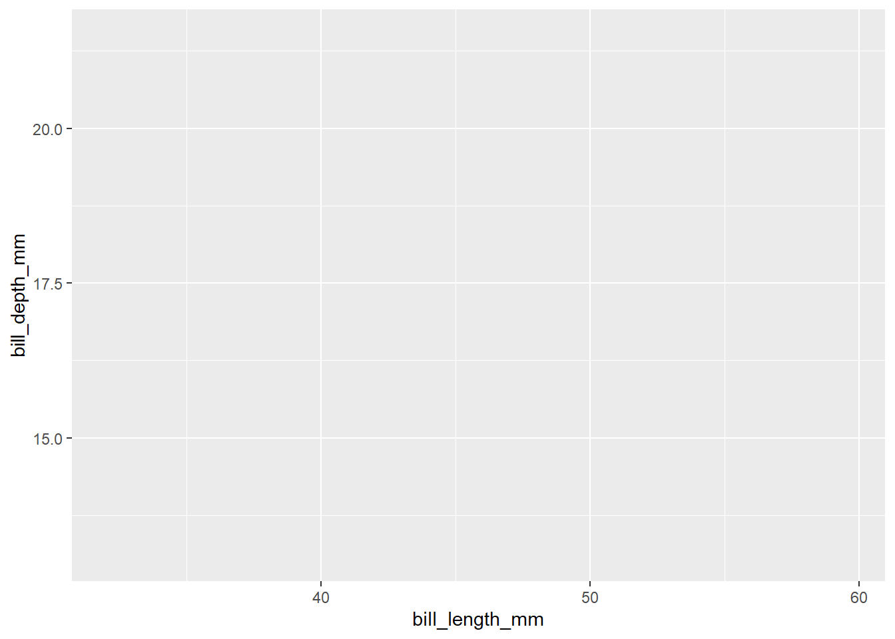
Although we have defined x - axis and y - axis in this plot, we do not see the plot because we have not added any geometric objects or we have not told how to represent the data frame to our plot. Next, we will add geometric objects (geoms) to represent our data. There are multiple geoms available such as geom_point : scatter plot, geom_bar : bar graphs, geom_boxplot : box plots and many more available here. Each geom function will have its own arguments to customize the plot. We have continuous values in both x and y axis. Therefore, we will create a scatter plot to visualize the relationship between bill_length_mm and bill_depth_mm. To create the scatter plot, we will add geom_point() layer to the plot using the + operator.
4 Scatter plot
penguins |>
ggplot(aes(x = bill_length_mm,
y = bill_depth_mm)) +
geom_point()Warning: Removed 2 rows containing missing values or values outside the scale range
(`geom_point()`).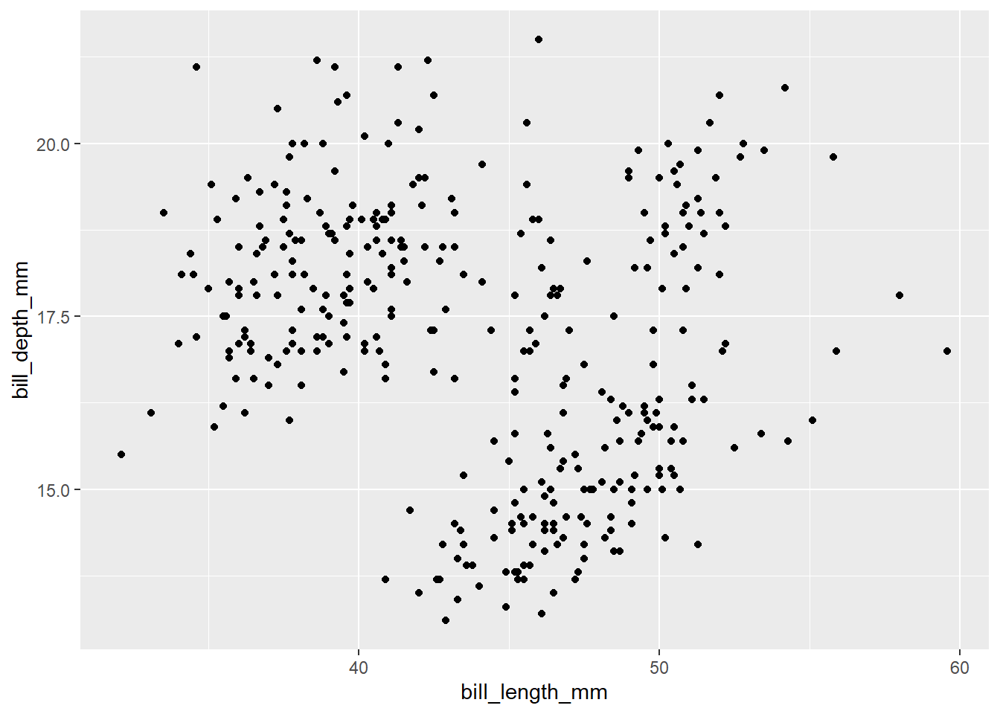
Finally, we can see the scatter plot. But we want to add third layer to our plot. For example, we would like to color the points by species of penguins. One way to do it would be by coloring penguins by species. To change color by species, we need to map the species variable to color inside the aes() function. When categorical variable is mapped to color, unique colors are assigned to each category automatically by ggplot2. And the legend will be added to show the category that corresponds to each color.
penguins |>
ggplot(aes(x = bill_length_mm,
y = bill_depth_mm, color = species)) +
geom_point()Warning: Removed 2 rows containing missing values or values outside the scale range
(`geom_point()`).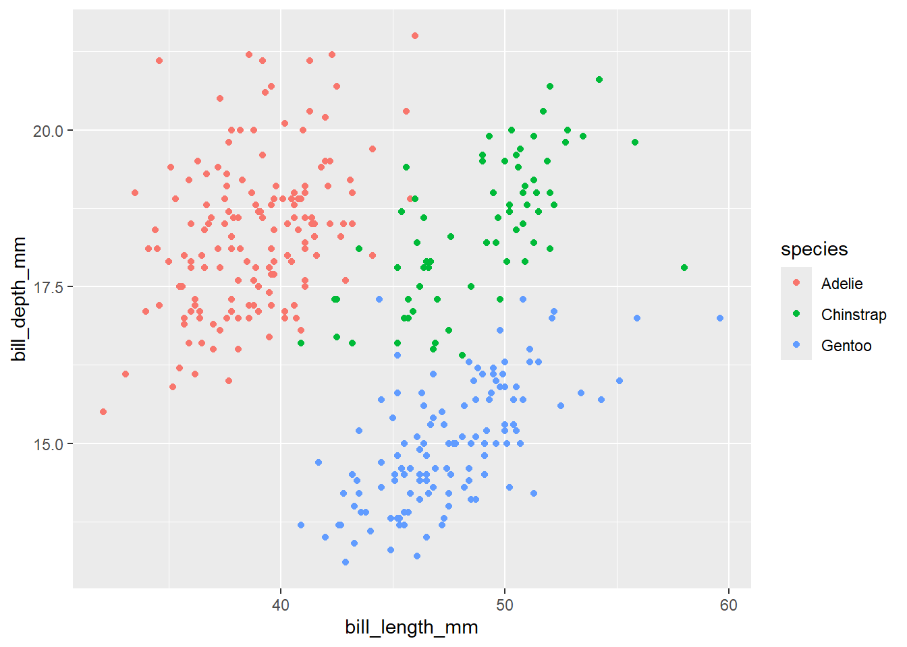
Now, we can see that each point is colored by the corresponding species of penguins. Again, we want to map the fourth variable island. Let’s map island to different shapes of the plot.
Exercise-1:
- What do you think will happen if you keep the
color = speciesoutside ofaes().
Click for the solution
penguins |>
ggplot(aes(x = bill_length_mm,
y = bill_depth_mm), color = species) +
geom_point()Warning: Removed 2 rows containing missing values or values outside the scale range
(`geom_point()`).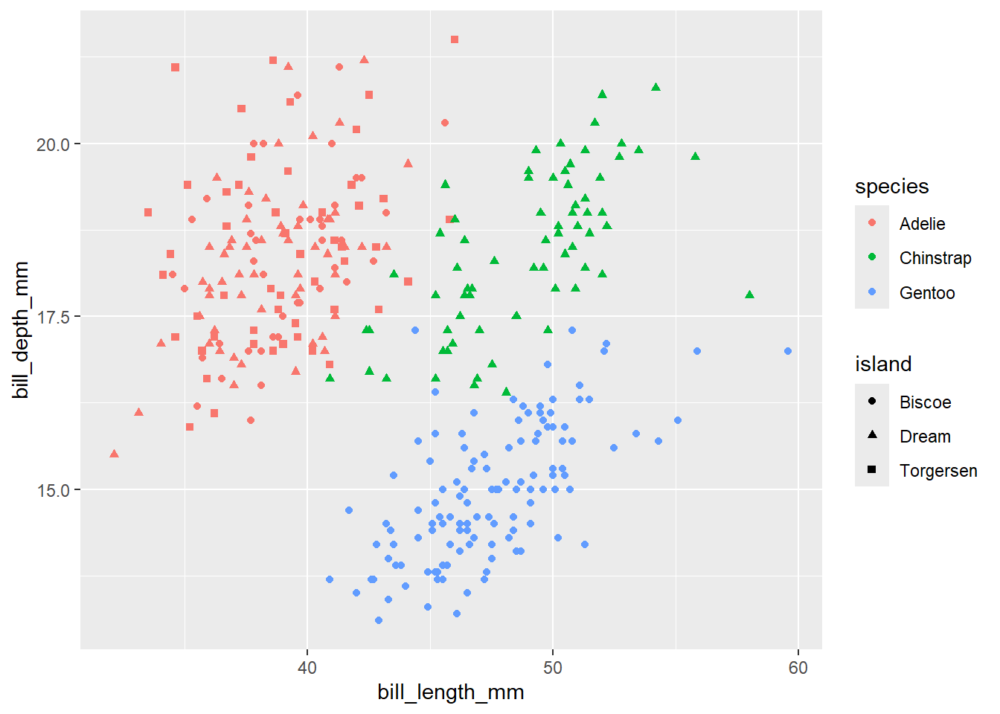
Anything outside aes() is considered as fixed setting. Therefore, all the points are colored black (default color). Legends will not be provided because we are not mapping variables to anything.
- Create a scatter plot with
bill_length_mmin x-axis andbill_depth_mmin y-axis. Color the points byspeciesand shape them byisland.
Click for the solution
penguins |>
ggplot(aes(x = bill_length_mm,
y = bill_depth_mm, color = species, shape = island)) +
geom_point()Warning: Removed 2 rows containing missing values or values outside the scale range
(`geom_point()`).
Here are several other aesthetic mappings options available in ggplot2
4.1 Mapping vs settings
Sometimes we want to set a specific color or size to all the points in the graph. We can set the aesthetic outside the aes() function to do it. To map variables, it needs to be inside aes(). However, it should be outside the aes() function to set a variable.
Exercise-2:
- Can you think how to color all the points red color in the above graph?
Click for the solution
## you can set `color = "red" outside the `aes()` function inside the `geom_point()` function.
penguins |>
ggplot(aes(x = bill_length_mm,
y = bill_depth_mm )) +
geom_point(color = "red")Warning: Removed 2 rows containing missing values or values outside the scale range
(`geom_point()`).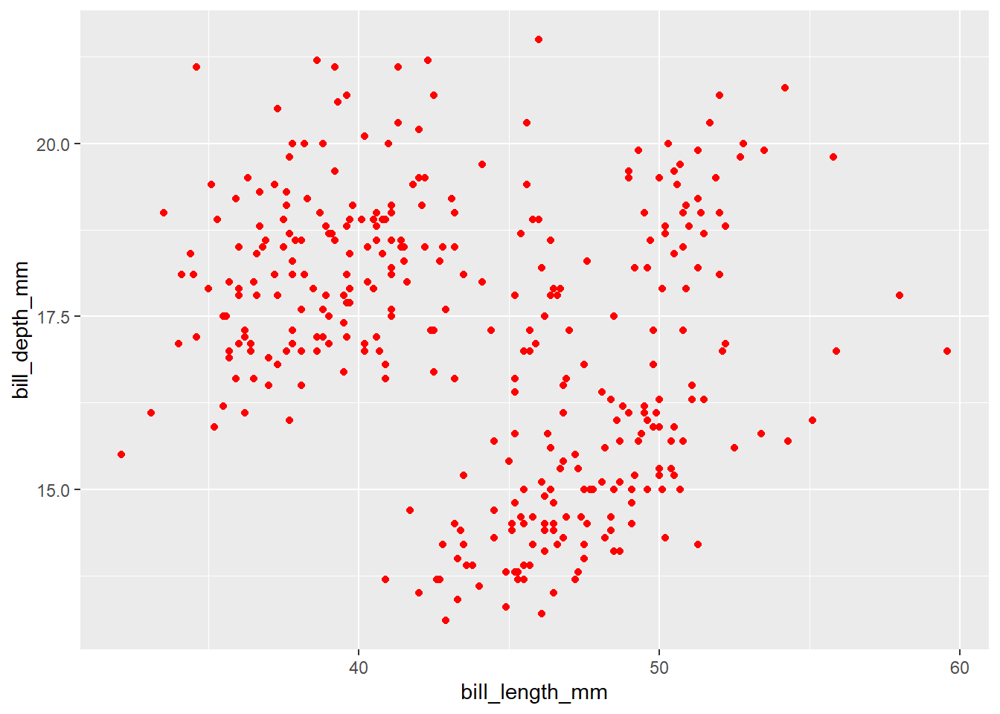
4.2 Global mapping and local mapping
In the above examples, we mapped aesthetics to certain variable color = species, shape = island in ggplot() at the global level. Hence, the same mapping aesthetics will be passed down to other geom layers. However, each geom layer can have its own aesthetic mapping at local level.
penguins |>
ggplot(aes(x = bill_length_mm,
y = bill_depth_mm, color = species)) +
geom_point() +
geom_smooth(method = "lm")`geom_smooth()` using formula = 'y ~ x'Warning: Removed 2 rows containing non-finite outside the scale range
(`stat_smooth()`).Warning: Removed 2 rows containing missing values or values outside the scale range
(`geom_point()`).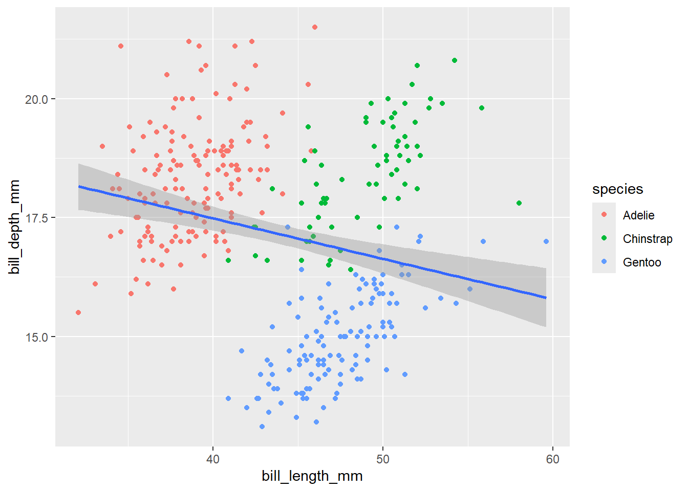
In the above code, we mapped color = species at the global level inside the ggplot() function, so both geom_point() and geom_smooth() layers have the same mapping colors for the points and line.
penguins |>
ggplot(aes(x = bill_length_mm,
y = bill_depth_mm)) +
geom_point(aes(color = species)) +
geom_smooth(method = "lm")`geom_smooth()` using formula = 'y ~ x'Warning: Removed 2 rows containing non-finite outside the scale range
(`stat_smooth()`).Warning: Removed 2 rows containing missing values or values outside the scale range
(`geom_point()`).
In the above code, we mapped color = species at the local level inside the geom_point() function. Therefore, only the points are colored by species while the line is in default color (blue).
4.3 Manually changing the colors
In the above codes, we used the default colors of ggplot. However, ggplot allows us to change the colors manually. We can set the exact colors of the plot using function scale_color_manual.
penguins |>
ggplot(aes(x = bill_length_mm,
y = bill_depth_mm)) +
geom_point(aes(color = species)) +
scale_color_manual(values = c("grey55", "orange", "skyblue")) +
geom_smooth(method = "lm")`geom_smooth()` using formula = 'y ~ x'Warning: Removed 2 rows containing non-finite outside the scale range
(`stat_smooth()`).Warning: Removed 2 rows containing missing values or values outside the scale range
(`geom_point()`).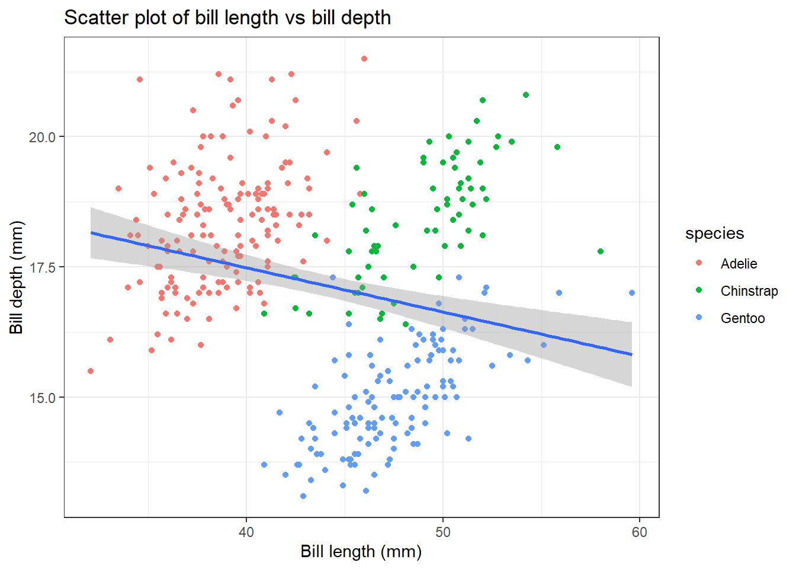
The order of the color will correspond to the order of species in the legend. If you are unsure which color to use for your plot, use the colors() to explore various available colors.
What if you have 10 treatments that you want to color? It requires lot of typing. R has several functions with wide range of color palettes. Let’s explore RcolorBrewer package that has several color palettes. . To use the RcolorBrewer package, first install it and load the package.
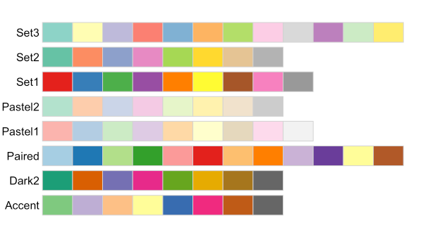
Let’s pick Pastel1 color palette for our scatter plot which needs to be used with the function scale_color_brewer()
library(RColorBrewer)
penguins |>
ggplot(aes(x = bill_length_mm,
y = bill_depth_mm)) +
geom_point(aes(color = species)) +
scale_color_brewer(palette = "Pastel1") +
geom_smooth(method = "lm")`geom_smooth()` using formula = 'y ~ x'Warning: Removed 2 rows containing non-finite outside the scale range
(`stat_smooth()`).Warning: Removed 2 rows containing missing values or values outside the scale range
(`geom_point()`).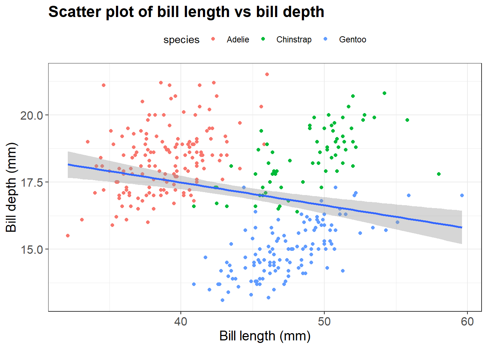
4.4 Adding titles and labels
Let’s say we want to change the title and the axis labels of our plot. We can do it using the labs() function. Most of the arguments of labs() function are self-explanatory. For instance, title adds title to the plot, x and y add labels to x - axis and y - axis respectively. In the above plot if we want to add title Scatter plot of bill length vs bill depth and change the axis labels of x-axis to Bill length (mm) and y-axis to Bill depth (mm):
penguins |>
ggplot(aes(x = bill_length_mm,
y = bill_depth_mm)) +
geom_point(aes(color = species)) +
geom_smooth(method = "lm")+
labs(title = "Scatter plot of bill length vs bill depth",
x = "Bill length (mm)",
y = "Bill depth (mm)")`geom_smooth()` using formula = 'y ~ x'Warning: Removed 2 rows containing non-finite outside the scale range
(`stat_smooth()`).Warning: Removed 2 rows containing missing values or values outside the scale range
(`geom_point()`).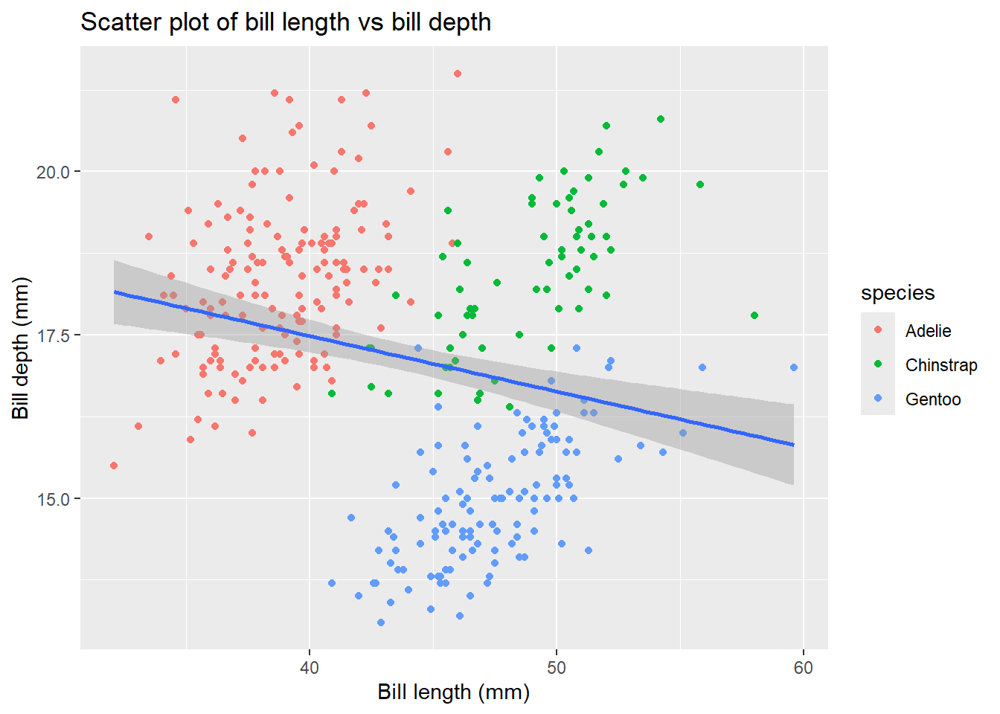
4.5 Adjusting themes
There are two ways to adjust themes in ggplot2. You can either customize individual theme elements using the theme() function or apply a pre-defined theme to your plot using theme_*().
We will first start by using preset theme. There are several pre-defined themes available in ggplot2 such as theme_minimal(), theme_classic(), theme_bw(), theme_light() etc. Here we will apply the theme_bw() to our previous plot:
penguins |>
ggplot(aes(x = bill_length_mm,
y = bill_depth_mm)) +
geom_point(aes(color = species)) +
geom_smooth(method = "lm") +
labs(title = "Scatter plot of bill length vs bill depth",
x = "Bill length (mm)",
y = "Bill depth (mm)") +
theme_bw()`geom_smooth()` using formula = 'y ~ x'Warning: Removed 2 rows containing non-finite outside the scale range
(`stat_smooth()`).Warning: Removed 2 rows containing missing values or values outside the scale range
(`geom_point()`).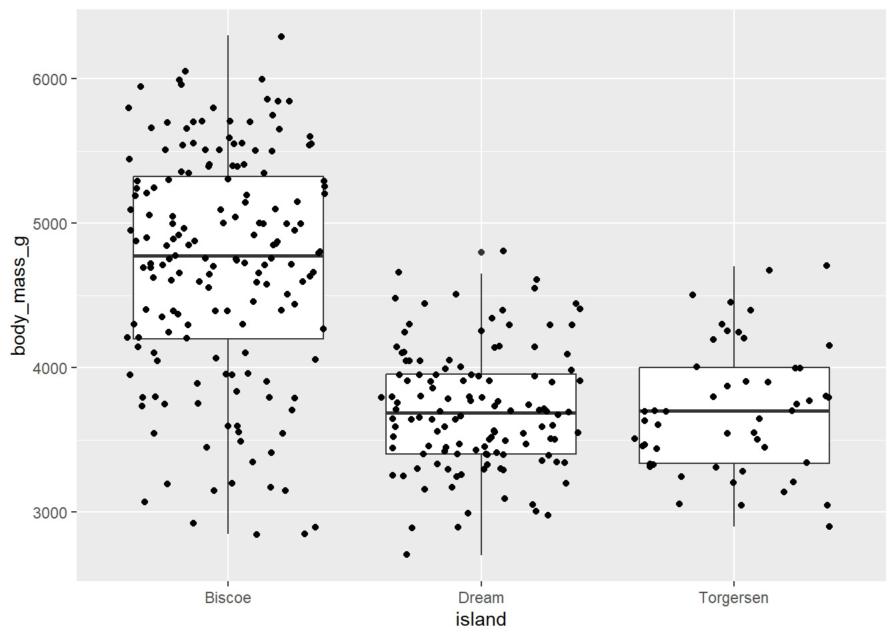
Now, we can change the individual theme elements using the theme() function. For example, we will change the text size of the plot title, axis and legend position using the command below:
penguins |>
ggplot(aes(x = bill_length_mm,
y = bill_depth_mm)) +
geom_point(aes(color = species)) +
geom_smooth(method = "lm") +
labs(title = "Scatter plot of bill length vs bill depth",
x = "Bill length (mm)",
y = "Bill depth (mm)") +
theme_bw() +
theme(plot.title = element_text(size = 16, face = "bold"),
axis.title = element_text(size = 14),
axis.text = element_text(size = 12),
legend.position = "top")`geom_smooth()` using formula = 'y ~ x'Warning: Removed 2 rows containing non-finite outside the scale range
(`stat_smooth()`).Warning: Removed 2 rows containing missing values or values outside the scale range
(`geom_point()`).
We have tried to create scatter plot so far using geom_point. However, there are different geoms available to create different type of plot in ggplot
5 Other Geometrical objects
5.1 Bar plot
It is one of the commonly used plot types. It can be used to visualize relationship between the categorical variable and numerical variable such as mean as well as counts per group. First, we will use bar graph to plot the mean of our data set. Let’s compute the mean first manually to plot the data. In week12 we learnt to group variable/s by group_by function. Use the same concept here to calculate the body mass of the penguins for each island.
## Before plotting, compute the mean
mean <- penguins |>
group_by(island) |>
summarize(mean_body_mass = mean(body_mass_g,
na.rm = TRUE)) # remove missing valuesmean |>
ggplot(aes(x = island, y = mean_body_mass)) +
geom_col()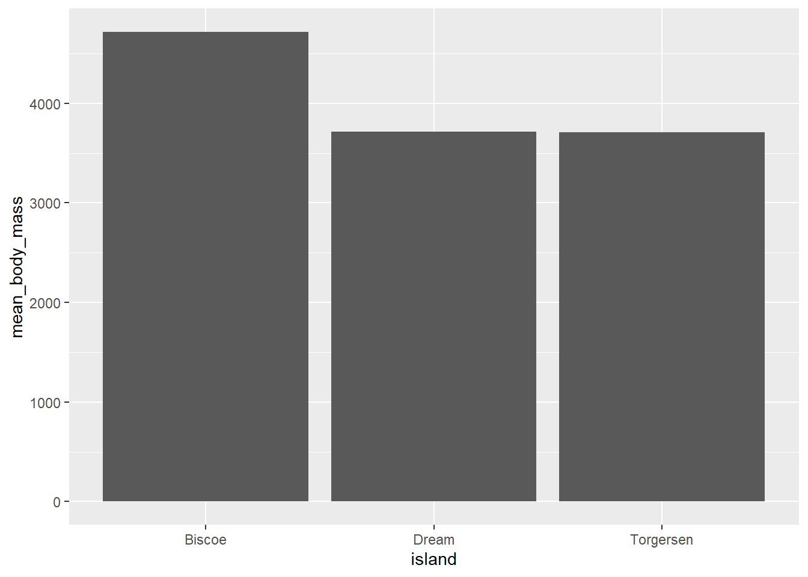
We can also use the bar graph to plot the counts per group instead of mean.
penguins |>
ggplot(aes(x = island)) +
geom_bar()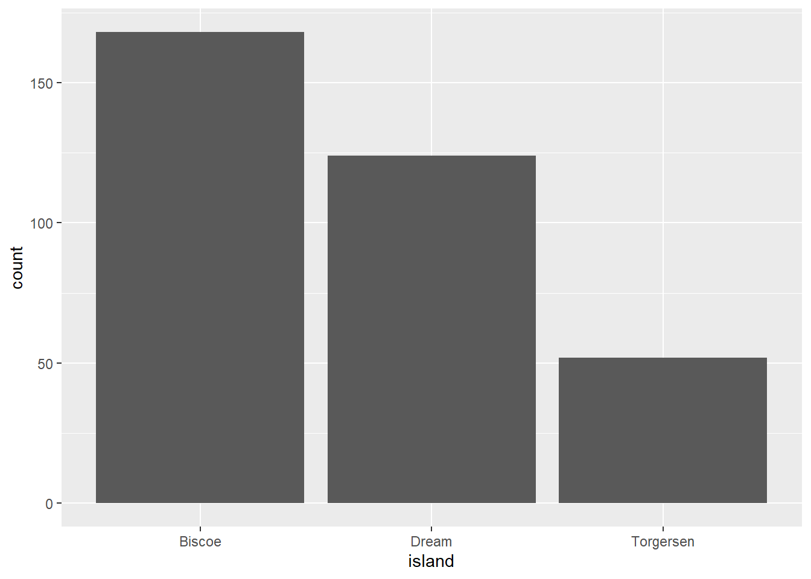
5.2 Box plot
We use box plot to visualize the relationship of numerical and categorical variables. We can see the distribution of data. Let’s say we want to create a box plot to visualize the distribution of body_mass_g across different island of penguins.
penguins |>
ggplot(aes(x = island,
y = body_mass_g)) +
geom_boxplot()Warning: Removed 2 rows containing non-finite outside the scale range
(`stat_boxplot()`).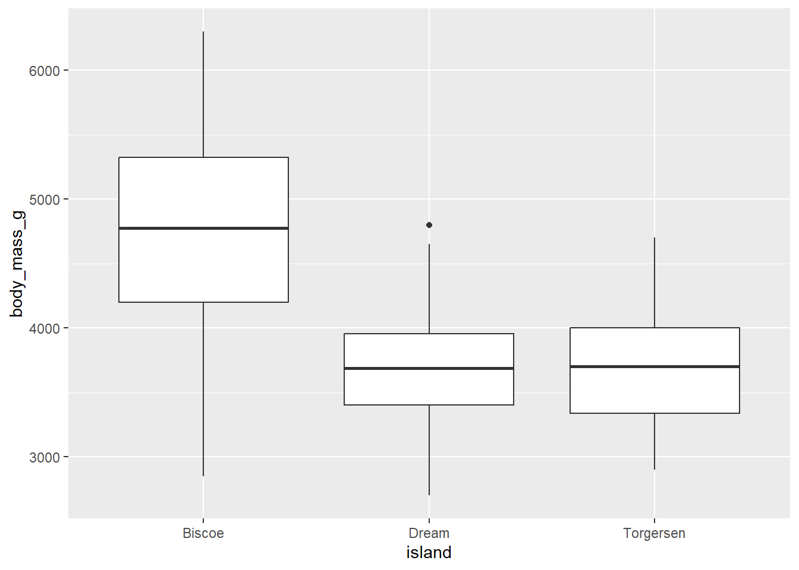
Exercise-3:
- Can you add the jitter points in the boxplot above to see the individual data points? Hint use
geom_jitter()function.
Click for the solution
penguins |>
ggplot(aes(x = island,
y = body_mass_g)) +
geom_boxplot() +
geom_jitter()Warning: Removed 2 rows containing non-finite outside the scale range
(`stat_boxplot()`).Warning: Removed 2 rows containing missing values or values outside the scale range
(`geom_point()`).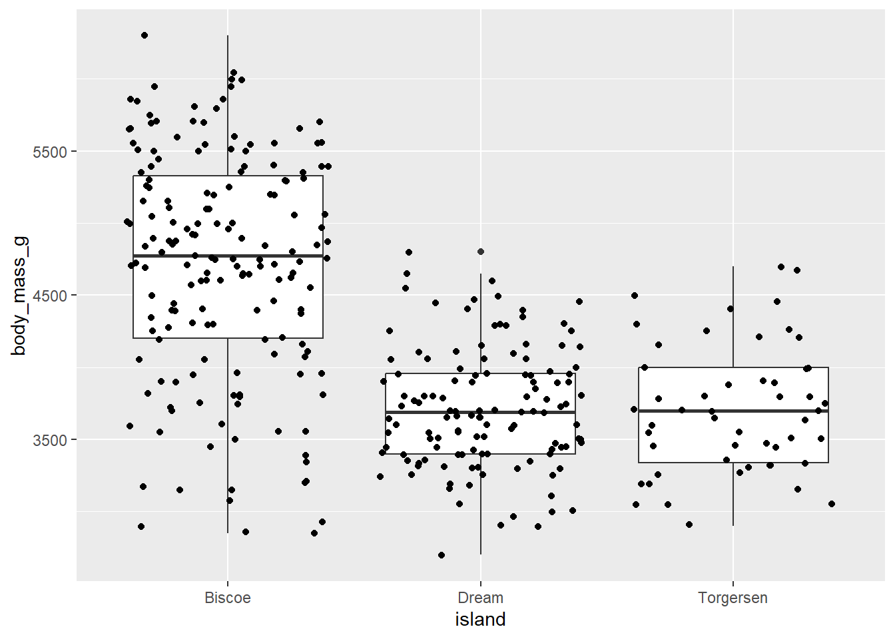
- Can you color the jitter points with the species of penguins?
Click for the solution
penguins |>
ggplot(aes(x = island,
y = body_mass_g)) +
geom_boxplot() +
geom_jitter(aes(color = species))Warning: Removed 2 rows containing non-finite outside the scale range
(`stat_boxplot()`).Warning: Removed 2 rows containing missing values or values outside the scale range
(`geom_point()`).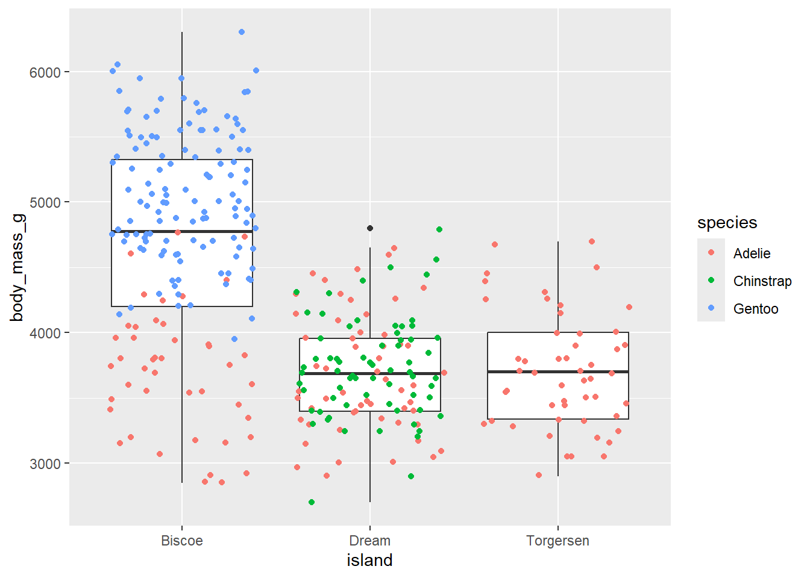
There are many other geom available in ggplot to construct the bar graph, histogram and more. ggplot2 cheat sheet from RStudio provides a overview of the different types of plots that can be created using the ggplot2.
6 Multi-panel figures-faceting
When you map too many variables in a single plot, your plot looks cluttered. One way to work around this problem is to facet the plot. Faceting allowing to create multiple panels based on the values of a categorical variable. It is useful to create separate sub-plots for each category of a variable to find the trends, patterns present in the data. You can use the facet_wrap() or facet_grid() functions to create faceted plots.
facet_wrap(): Use this function to facet by single categorical variable. It allows to lay out panels wrapped into a rectangular layout.facet_grid(): Use this function to facet by one or two categorical variables. It allows you to lay out your facets in a grid, one for rows and one for columns.
Let’s say, in the last box plot, we want to facet box plot by species:
penguins |>
ggplot(aes(x = island,
y = body_mass_g)) +
geom_boxplot()+
facet_wrap(vars(species))Warning: Removed 2 rows containing non-finite outside the scale range
(`stat_boxplot()`).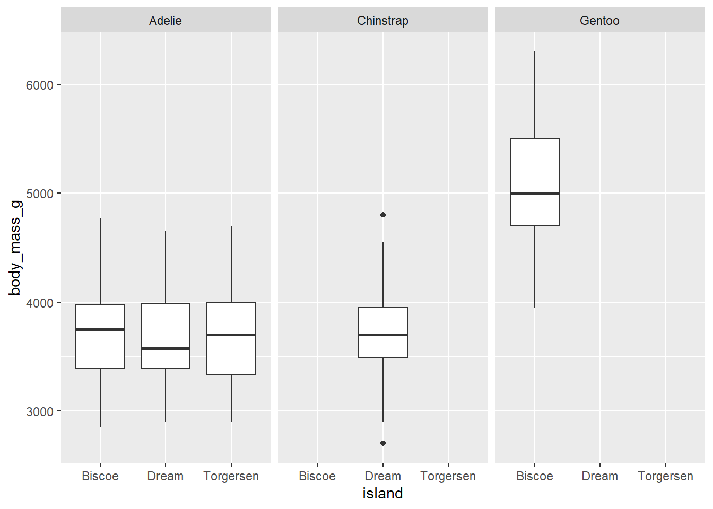
If we want to facet by species and the sex of penguins, use the following code
penguins |>
ggplot(aes(x = island,
y = body_mass_g)) +
geom_boxplot()+
facet_grid(rows = vars(sex), cols = vars(species))Warning: Removed 2 rows containing non-finite outside the scale range
(`stat_boxplot()`).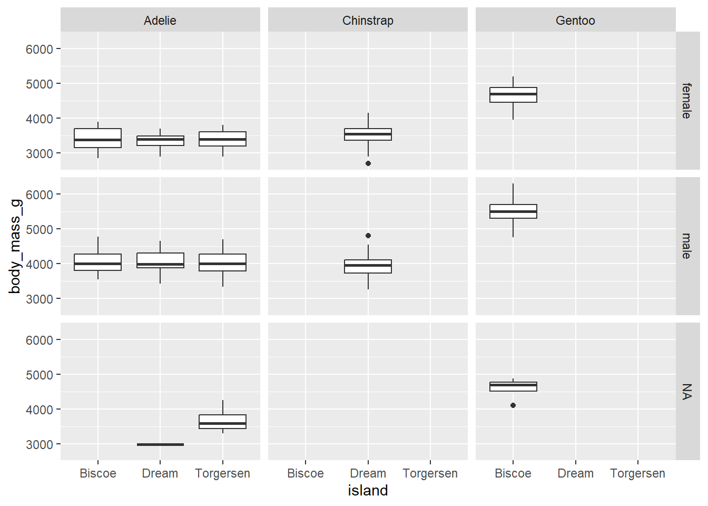
7 Exporting the plots
You can save the plots in different formats such as PNG, JPEG, PDF, etc. either manually or by using the ggsave function. To export plot manually, use the Export button in the Plots of the output pane. You can choose the file format, size, but you are limited in other parameters when you export file manually. ggsave() provides more flexibility to save the plots.
ggsave(filename = "results/boxplot.png", # file path and name
plot = box_plot_body_mass_and_island, # what to save
width = 18,
height = 12,
dpi = 300, # dots per inch, ie resolution
units = "cm") # units for width and height8 Recap and next steps
- Basic syntax of
ggplot2 - Add layers in ggplot
- Aesthetic mappings using
aes() - Different types of plots using
geom_functions - Faceting the plots using
facet_wrap()andfacet_grid()